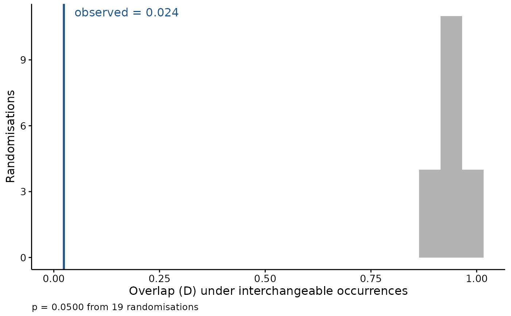

The observed overlap on its own says little – two surfaces built from the same covariates over the same domain overlap substantially whatever the species do. What makes it readable is seeing it against the distribution of overlaps that interchangeable occurrences would have produced.
Usage
# S3 method for class 'fancyfx_equivalency'
plot(
x,
title = "",
bins = 20,
theme = theme_fancyfx(),
colour = fancyfx_palette(1),
...
)Arguments
- x
A result from
niche_equivalency().- title
Plot title, optional.
- bins
Number of histogram bins for the null distribution.
- theme
A ggplot2 theme. Defaults to
theme_fancyfx().- colour
Colour of the observed-value line.
- ...
Ignored.
See also
niche_equivalency() for the test itself.
Other spatial plots:
ensemble_summary(),
hex_bin(),
mess(),
niche_equivalency(),
niche_overlap(),
plotExtrapolation(),
plotHexbin(),
plotUncertainty(),
thin_points()
Examples
set.seed(1)
grid <- seq(0, 20, length.out = 50)
fit_density <- function(o) stats::dnorm(grid, mean(o$temp), stats::sd(o$temp))
result <- niche_equivalency(data.frame(temp = rnorm(60, 8, 1.5)),
data.frame(temp = rnorm(60, 14, 1.5)),
fit_density, n.rep = 19)
plot(result)
